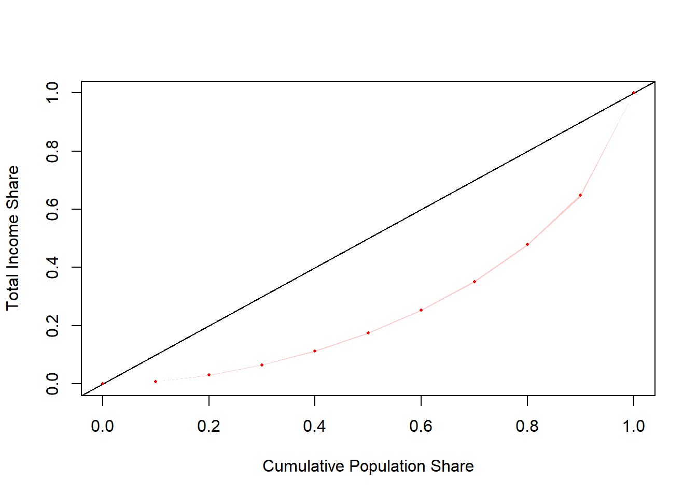
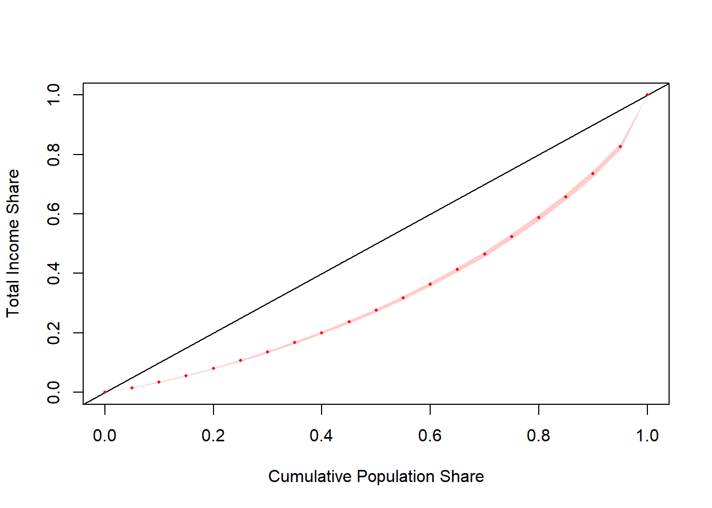
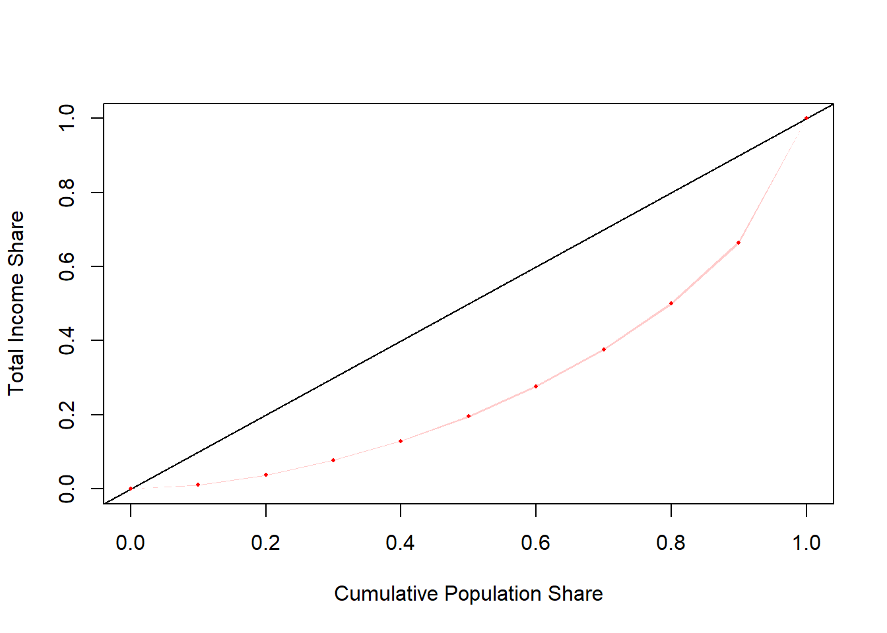

4.5 Lorenz Curve (svylorenz)
✔️ graphical device for understanding inequality measurement
✔️ simple to understand
✔️ conveys information about inequality across the entire income distribution
✔️ Lorenz dominance and inequality measure ordering
❌ testing Lorenz dominance is difficult
❌ can hide inequality in the top or bottom
❌ cannot be summarised into a single numberThough not an inequality measure in itself, the Lorenz curve is a classic instrument of distribution analysis. This function associates a cumulative share of the population to the share of the total income earned. In mathematical terms,
\[ L(p) = \frac{\int_{-\infty}^{Q_p}yf(y)dy}{\int_{-\infty}^{+\infty}yf(y)dy} \]
where \(Q_p\) is the quantile \(p\) of the population.
The two extreme distributive cases are
- Perfect equality:
- Every individual has the same income;
- Every share of the population has the same share of the income;
- Therefore, the reference curve is \[L(p) = p \text{ } \forall p \in [0,1] \text{.}\]
- Perfect inequality:
- One individual concentrates all of society’s income, while the other individuals have zero income;
- Therefore, the reference curve is
\[ L(p)= \begin{cases} 0, &\forall p < 1 \\ 1, &\text{if } p = 1 \text{.} \end{cases} \]
In order to evaluate the degree of inequality in a society, the analyst looks at the distance between the real curve and those two reference curves.
The estimator of this function was derived by Kovacevic and Binder (1997Kovacevic, Milorad, and David Binder. 1997. “Variance Estimation for Measures of Income Inequality and Polarization - the Estimating Equations Approach.” Journal of Official Statistics 13 (1): 41–58. http://www.jos.nu/Articles/abstract.asp?article=13141.):
\[ L(p) = \frac{ \sum_{i \in S} w_i \cdot y_i \cdot \delta \{ y_i \le \widehat{Q}_p \}}{\widehat{Y}}, \text{ } 0 \le p \le 1. \]
Yet, this formula is used to calculate specific points of the curve and their respective SEs. The formula to plot an approximation of the continuous empirical curve comes from Lerman and Yitzhaki (1989Lerman, Robert, and Shlomo Yitzhaki. 1989. “Improving the Accuracy of Estimates of Gini Coefficients.” Journal of Econometrics 42 (1): 43–47. http://EconPapers.repec.org/RePEc:eee:econom:v:42:y:1989:i:1:p:43-47.).
4.5.1 Replication Example
In October 2016, (Jann 2016Jann, Ben. 2016. “Estimating Lorenz and concentration curves in Stata.” University of Bern Social Sciences Working Papers 15. University of Bern, Department of Social Sciences. https://ideas.repec.org/p/bss/wpaper/15.html.) released a pre-publication working paper to estimate Lorenz and concentration curves using Stata. The example below reproduces the statistics presented in his Section 4.1.
# load the convey package
library(convey)
# load the survey library
library(survey)
# load the stata-style webuse library
library(webuse)
# load the NLSW 1988 data
webuse("nlsw88")
# coerce that `tbl_df` to a standard R `data.frame`
nlsw88 <- data.frame(nlsw88)
# initiate a linearized survey design object
des_nlsw88 <- svydesign(ids = ~ 1 , data = nlsw88)## Warning in svydesign.default(ids = ~1, data = nlsw88): No weights or
## probabilities supplied, assuming equal probability# immediately run the `convey_prep` function on the survey design
des_nlsw88 <- convey_prep(des_nlsw88)
# estimates lorenz curve
result.lin <-
svylorenz( ~ wage,
des_nlsw88,
quantiles = seq(0, 1, .05),
na.rm = TRUE)
# note: most survey commands in R use Inf degrees of freedom by default
# stata generally uses the degrees of freedom of the survey design.
# therefore, while the degf() parameters passed to qt()
# serve to prove a precise replication of stata,
# it is generally not necessary
section_four_one <-
data.frame(
estimate = coef(result.lin) ,
standard_error = SE(result.lin) ,
ci_lower_bound =
coef(result.lin) +
SE(result.lin) *
qt(0.025 , degf(subset(
des_nlsw88 , !is.na(wage)
))) ,
ci_upper_bound =
coef(result.lin) +
SE(result.lin) *
qt(0.975 , degf(subset(
des_nlsw88 , !is.na(wage)
)))
)| estimate | standard_error | ci_lower_bound | ci_upper_bound | |
|---|---|---|---|---|
| L(0) | 0.0000000 | 0.0000000 | 0.0000000 | 0.0000000 |
| L(0.05) | 0.0151060 | 0.0004159 | 0.0142904 | 0.0159216 |
| L(0.1) | 0.0342651 | 0.0007021 | 0.0328882 | 0.0356420 |
| L(0.15) | 0.0558635 | 0.0010096 | 0.0538836 | 0.0578434 |
| L(0.2) | 0.0801846 | 0.0014032 | 0.0774329 | 0.0829363 |
| L(0.25) | 0.1067687 | 0.0017315 | 0.1033732 | 0.1101642 |
| L(0.3) | 0.1356307 | 0.0021301 | 0.1314535 | 0.1398078 |
| L(0.35) | 0.1670287 | 0.0025182 | 0.1620903 | 0.1719670 |
| L(0.4) | 0.2005501 | 0.0029161 | 0.1948315 | 0.2062687 |
| L(0.45) | 0.2369209 | 0.0033267 | 0.2303971 | 0.2434447 |
| L(0.5) | 0.2759734 | 0.0037423 | 0.2686347 | 0.2833121 |
| L(0.55) | 0.3180215 | 0.0041626 | 0.3098585 | 0.3261844 |
| L(0.6) | 0.3633071 | 0.0045833 | 0.3543192 | 0.3722950 |
| L(0.65) | 0.4125183 | 0.0050056 | 0.4027021 | 0.4223345 |
| L(0.7) | 0.4657641 | 0.0054137 | 0.4551478 | 0.4763804 |
| L(0.75) | 0.5241784 | 0.0058003 | 0.5128039 | 0.5355529 |
| L(0.8) | 0.5880894 | 0.0062464 | 0.5758401 | 0.6003388 |
| L(0.85) | 0.6577051 | 0.0066148 | 0.6447333 | 0.6706769 |
| L(0.9) | 0.7346412 | 0.0068289 | 0.7212497 | 0.7480328 |
| L(0.95) | 0.8265786 | 0.0062686 | 0.8142857 | 0.8388715 |
| L(1) | 1.0000000 | 0.0000000 | 1.0000000 | 1.0000000 |
For additional usage examples of svylorenz, type ?convey::svylorenz in the R console.
4.5.2 Real World Examples
This section displays example results using nationally-representative surveys from both the United States and Brazil. We present a variety of surveys, levels of analysis, and subpopulation breakouts to provide users with points of reference for the range of plausible values of the svylorenz function.
To understand the construction of each survey design object and respective variables of interest, please refer to section 1.4 for CPS-ASEC, section 1.5 for PNAD-Contínua, and section 1.6 for SCF.
4.5.2.1 CPS-ASEC Household Income

## lorenz SE
## L(0) 0.0000000 0.0000
## L(0.1) 0.0078835 0.0002
## L(0.2) 0.0301815 0.0003
## L(0.3) 0.0647078 0.0005
## L(0.4) 0.1124628 0.0007
## L(0.5) 0.1743857 0.0010
## L(0.6) 0.2528969 0.0013
## L(0.7) 0.3518764 0.0017
## L(0.8) 0.4782876 0.0020
## L(0.9) 0.6477196 0.0024
## L(1) 1.0000000 0.0000## sex L(0) L(0.1) L(0.2) L(0.3) L(0.4) L(0.5)
## male male 0 0.008711198 0.03299882 0.07003943 0.1201793 0.1846340
## female female 0 0.007491401 0.02865454 0.06153436 0.1075468 0.1674756
## L(0.6) L(0.7) L(0.8) L(0.9) L(1) se.L(0) se.L(0.1)
## male 0.2654845 0.3657357 0.4918030 0.6586942 1 0 0.0002357485
## female 0.2438393 0.3409348 0.4663411 0.6375999 1 0 0.0002154953
## se.L(0.2) se.L(0.3) se.L(0.4) se.L(0.5) se.L(0.6)
## male 0.0004646962 0.0007383691 0.0010891236 0.001540103 0.001999151
## female 0.0004305065 0.0006959693 0.0009452599 0.001232484 0.001590568
## se.L(0.7) se.L(0.8) se.L(0.9) se.L(1)
## male 0.002485793 0.003005451 0.003548265 2.504285e-15
## female 0.002034005 0.002537040 0.003106226 1.188250e-154.5.2.2 CPS-ASEC Family Income

## lorenz SE
## L(0) 0.000000 0.0000
## L(0.1) 0.010217 0.0002
## L(0.2) 0.037280 0.0004
## L(0.3) 0.077088 0.0006
## L(0.4) 0.129330 0.0009
## L(0.5) 0.195271 0.0012
## L(0.6) 0.276575 0.0015
## L(0.7) 0.376452 0.0019
## L(0.8) 0.501083 0.0022
## L(0.9) 0.664871 0.0027
## L(1) 1.000000 0.0000## sex L(0) L(0.1) L(0.2) L(0.3) L(0.4) L(0.5)
## male male 0 0.013010580 0.04273925 0.08482919 0.1396230 0.2076537
## female female 0 0.008151338 0.03302541 0.07077188 0.1210426 0.1847682
## L(0.6) L(0.7) L(0.8) L(0.9) L(1) se.L(0) se.L(0.1)
## male 0.2900316 0.3903172 0.5137051 0.6751347 1 0 0.0003219454
## female 0.2644755 0.3635604 0.4885155 0.6546110 1 0 0.0002845583
## se.L(0.2) se.L(0.3) se.L(0.4) se.L(0.5) se.L(0.6)
## male 0.0006339085 0.0009845744 0.001461111 0.001914618 0.002389766
## female 0.0005823823 0.0008596945 0.001144158 0.001467129 0.001862476
## se.L(0.7) se.L(0.8) se.L(0.9) se.L(1)
## male 0.002921230 0.003507343 0.004117174 3.207565e-15
## female 0.002280797 0.002769364 0.003331600 1.567244e-154.5.2.3 CPS-ASEC Worker Earnings
## lorenz SE
## L(0) 0.000000 0.0000
## L(0.1) 0.023130 0.0002
## L(0.2) 0.060377 0.0004
## L(0.3) 0.106899 0.0007
## L(0.4) 0.163350 0.0009
## L(0.5) 0.229455 0.0012
## L(0.6) 0.307082 0.0016
## L(0.7) 0.400238 0.0019
## L(0.8) 0.514988 0.0023
## L(0.9) 0.666965 0.0027
## L(1) 1.000000 0.0000## sex L(0) L(0.1) L(0.2) L(0.3) L(0.4) L(0.5)
## male male 0 0.02238660 0.05836819 0.1041038 0.1592257 0.2239923
## female female 0 0.02507876 0.06479208 0.1143831 0.1731267 0.2422488
## L(0.6) L(0.7) L(0.8) L(0.9) L(1) se.L(0) se.L(0.1)
## male 0.3012719 0.3947681 0.5101574 0.6633305 1 0 0.0002953175
## female 0.3226768 0.4180215 0.5330910 0.6815331 1 0 0.0003308394
## se.L(0.2) se.L(0.3) se.L(0.4) se.L(0.5) se.L(0.6)
## male 0.0005432051 0.0008543333 0.001174698 0.001516332 0.001876406
## female 0.0006606130 0.0010537879 0.001544733 0.002105608 0.002734016
## se.L(0.7) se.L(0.8) se.L(0.9) se.L(1)
## male 0.002277419 0.002744350 0.003165873 2.115987e-15
## female 0.003441538 0.004196611 0.005025823 7.785427e-16## lorenz SE
## L(0) 0.000000 0.0000
## L(0.1) 0.023301 0.0002
## L(0.2) 0.061374 0.0005
## L(0.3) 0.108894 0.0007
## L(0.4) 0.166611 0.0010
## L(0.5) 0.233537 0.0013
## L(0.6) 0.312104 0.0017
## L(0.7) 0.405714 0.0020
## L(0.8) 0.521016 0.0025
## L(0.9) 0.670788 0.0028
## L(1) 1.000000 0.0000## sex L(0) L(0.1) L(0.2) L(0.3) L(0.4) L(0.5)
## male male 0 0.02260676 0.05964067 0.1065089 0.1628242 0.2286733
## female female 0 0.02507904 0.06552037 0.1157527 0.1755577 0.2457090
## L(0.6) L(0.7) L(0.8) L(0.9) L(1) se.L(0) se.L(0.1)
## male 0.3066507 0.4001960 0.5152150 0.6668539 1 0 0.0003205479
## female 0.3274128 0.4231856 0.5386688 0.6864376 1 0 0.0003701607
## se.L(0.2) se.L(0.3) se.L(0.4) se.L(0.5) se.L(0.6)
## male 0.0005839661 0.0008955479 0.001251582 0.001621156 0.002010417
## female 0.0006814593 0.0010915095 0.001565890 0.002143892 0.002783885
## se.L(0.7) se.L(0.8) se.L(0.9) se.L(1)
## male 0.002432147 0.002901305 0.003328216 2.251523e-15
## female 0.003542867 0.004336560 0.005211980 8.940570e-164.5.2.4 PNAD-Contínua Per Capita Income

## lorenz SE
## L(0) 0.000000 0.0000
## L(0.1) 0.010308 0.0002
## L(0.2) 0.034186 0.0004
## L(0.3) 0.068642 0.0007
## L(0.4) 0.112877 0.0010
## L(0.5) 0.169002 0.0015
## L(0.6) 0.239610 0.0020
## L(0.7) 0.324190 0.0026
## L(0.8) 0.434268 0.0032
## L(0.9) 0.593217 0.0036
## L(1) 1.000000 0.0000svyby(
~ deflated_per_capita_income ,
~ sex ,
pnadc_design ,
svylorenz ,
na.rm = TRUE,
plot = FALSE
)## sex L(0) L(0.1) L(0.2) L(0.3) L(0.4) L(0.5)
## male male 0 0.01035505 0.03416499 0.06842743 0.1125443 0.1684484
## female female 0 0.01026366 0.03424047 0.06889470 0.1132396 0.1695964
## L(0.6) L(0.7) L(0.8) L(0.9) L(1) se.L(0) se.L(0.1)
## male 0.2385949 0.3229764 0.4325385 0.5905343 1 0 0.0001598646
## female 0.2406749 0.3255351 0.4360857 0.5959760 1 0 0.0001734623
## se.L(0.2) se.L(0.3) se.L(0.4) se.L(0.5) se.L(0.6)
## male 0.0004084916 0.0007265946 0.001117489 0.001586936 0.002141805
## female 0.0004056837 0.0007102241 0.001085548 0.001526560 0.002055401
## se.L(0.7) se.L(0.8) se.L(0.9) se.L(1)
## male 0.002755001 0.003438160 0.003935079 1.372123e-14
## female 0.002635157 0.003246783 0.003692593 1.375890e-144.5.2.5 PNAD-Contínua Worker Earnings

## lorenz SE
## L(0) 0.000000 0.0000
## L(0.1) 0.013757 0.0002
## L(0.2) 0.047021 0.0005
## L(0.3) 0.092156 0.0009
## L(0.4) 0.139512 0.0013
## L(0.5) 0.195709 0.0018
## L(0.6) 0.263539 0.0023
## L(0.7) 0.344910 0.0028
## L(0.8) 0.449921 0.0035
## L(0.9) 0.602325 0.0039
## L(1) 1.000000 0.0000## sex L(0) L(0.1) L(0.2) L(0.3) L(0.4) L(0.5)
## male male 0 0.01479485 0.04970360 0.09109163 0.1377881 0.1932095
## female female 0 0.01310505 0.04455232 0.09429877 0.1470017 0.2053579
## L(0.6) L(0.7) L(0.8) L(0.9) L(1) se.L(0) se.L(0.1)
## male 0.2601240 0.3411822 0.4444202 0.5936141 1 0 0.0002346166
## female 0.2732088 0.3564577 0.4637346 0.6185808 1 0 0.0002253768
## se.L(0.2) se.L(0.3) se.L(0.4) se.L(0.5) se.L(0.6) se.L(0.7)
## male 0.0006161464 0.001005294 0.001452747 0.001961842 0.002576650 0.003213931
## female 0.0006285661 0.001063121 0.001501447 0.001973454 0.002485304 0.003082921
## se.L(0.8) se.L(0.9) se.L(1)
## male 0.003884886 0.004552286 6.849176e-15
## female 0.003555541 0.003983535 4.229017e-154.5.2.6 SCF Family Net Worth
## Multiple imputation results:
## m <- length(results)
## scf_MIcombine(with(scf_design, svylorenz(~networth, plot = FALSE)))
## results se
## L(0) 0.0000000000 0.000000e+00
## L(0.1) -0.0028733776 3.317057e-04
## L(0.2) -0.0022553458 3.521598e-04
## L(0.3) 0.0004459999 4.064156e-04
## L(0.4) 0.0079302438 5.754833e-04
## L(0.5) 0.0219994670 9.274081e-04
## L(0.6) 0.0456150724 1.551184e-03
## L(0.7) 0.0832913346 2.517069e-03
## L(0.8) 0.1464710070 4.276921e-03
## L(0.9) 0.2664522253 9.021108e-03
## L(1) 1.0000000000 5.418339e-14## Multiple imputation results:
## m <- length(results)
## scf_MIcombine(with(scf_design, svyby(~networth, ~hhsex, svylorenz,
## plot = FALSE)))
## results se
## male:L(0) 0.0000000000 0.000000e+00
## female:L(0) 0.0000000000 0.000000e+00
## male:L(0.1) -0.0014388793 3.105843e-04
## female:L(0.1) -0.0156915253 2.141826e-03
## male:L(0.2) -0.0003156869 3.470611e-04
## female:L(0.2) -0.0160060633 2.267987e-03
## male:L(0.3) 0.0038653318 4.742821e-04
## female:L(0.3) -0.0144539779 2.350669e-03
## male:L(0.4) 0.0129277681 7.101711e-04
## female:L(0.4) -0.0094633182 2.545582e-03
## male:L(0.5) 0.0283867252 1.179355e-03
## female:L(0.5) 0.0051366417 3.223219e-03
## male:L(0.6) 0.0532812887 2.012607e-03
## female:L(0.6) 0.0336959667 5.275519e-03
## male:L(0.7) 0.0927307731 3.367689e-03
## female:L(0.7) 0.0854633293 9.112640e-03
## male:L(0.8) 0.1587225037 5.890160e-03
## female:L(0.8) 0.1741705589 1.488174e-02
## male:L(0.9) 0.2805080957 1.071792e-02
## female:L(0.9) 0.3181424720 2.130434e-02
## male:L(1) 1.0000000000 5.987673e-14
## female:L(1) 1.0000000000 1.539964e-134.5.2.7 SCF Family Income
## Multiple imputation results:
## m <- length(results)
## scf_MIcombine(with(scf_design, svylorenz(~income, plot = FALSE)))
## results se
## L(0) 0.000000000 0.000000e+00
## L(0.1) 0.009149892 3.962855e-04
## L(0.2) 0.027057203 9.739769e-04
## L(0.3) 0.053251482 1.780122e-03
## L(0.4) 0.087721136 2.823765e-03
## L(0.5) 0.131979820 4.140046e-03
## L(0.6) 0.188512068 5.722493e-03
## L(0.7) 0.261121844 7.618002e-03
## L(0.8) 0.353912112 9.877160e-03
## L(0.9) 0.490308571 1.309455e-02
## L(1) 1.000000000 1.156969e-13## Multiple imputation results:
## m <- length(results)
## scf_MIcombine(with(scf_design, svyby(~income, ~hhsex, svylorenz,
## plot = FALSE)))
## results se
## male:L(0) 0.00000000 0.000000e+00
## female:L(0) 0.00000000 0.000000e+00
## male:L(0.1) 0.00948675 4.726471e-04
## female:L(0.1) 0.01692949 9.243037e-04
## male:L(0.2) 0.02900880 1.181461e-03
## female:L(0.2) 0.04671699 1.804966e-03
## male:L(0.3) 0.05674917 2.102839e-03
## female:L(0.3) 0.08586459 2.970393e-03
## male:L(0.4) 0.09302095 3.311189e-03
## female:L(0.4) 0.13620491 4.396387e-03
## male:L(0.5) 0.13914162 4.770121e-03
## female:L(0.5) 0.19907819 6.095121e-03
## male:L(0.6) 0.19719993 6.543262e-03
## female:L(0.6) 0.27616636 8.072385e-03
## male:L(0.7) 0.26787270 8.542302e-03
## female:L(0.7) 0.36922890 1.008221e-02
## male:L(0.8) 0.35882343 1.112412e-02
## female:L(0.8) 0.48710887 1.231366e-02
## male:L(0.9) 0.49330923 1.475487e-02
## female:L(0.9) 0.64326768 1.439133e-02
## male:L(1) 1.00000000 1.308094e-13
## female:L(1) 1.00000000 3.983886e-14